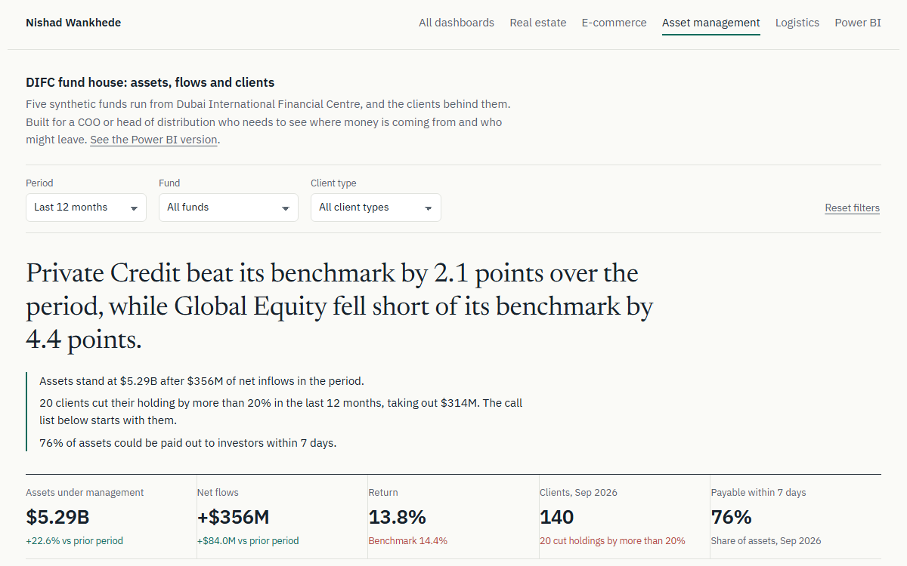
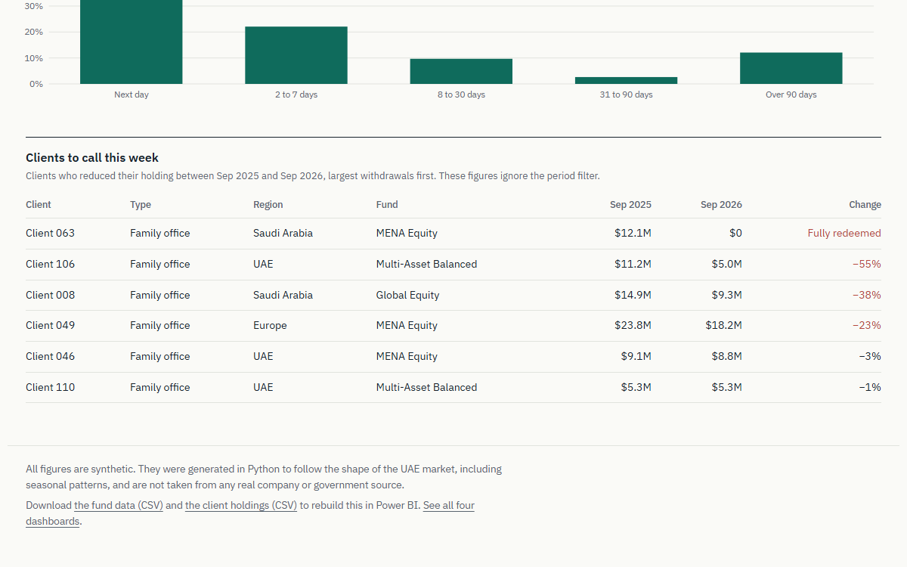

Asset management
DIFC Fund House
Assets, flows, performance against benchmark, a client call list and liquidity, on a navy sidebar design.
Download0.3 MBWeb version
Four Power BI reports on synthetic UAE data, each with its own design.
Every report runs on a star-schema model with DAX measures, opens with a headline written from the data, and lets you pick a metric or break numbers down with Power BI's AI visual.
A video walkthrough of the DIFC Fund House dashboard in action, showing real-time slicer filtering, KPI calculations, and chart updates. Open the live interactive web dashboard →
Each download is a Power BI project. Extract it, open the .pbip file in Power BI Desktop and click Refresh; the data is built in.
Asset management
Assets, flows, performance against benchmark, a client call list and liquidity, on a navy sidebar design.
Download0.3 MBWeb version
Real estate
Dubai sales, price per sq ft, rental yield and off-plan share, with a metric picker and an AI breakdown page. Editorial top-bar design.
Download0.4 MBWeb version
E-commerce
Revenue, returns, cash on delivery and delivery speed across the seven emirates. Dark-mode design with an icon rail.
Download1.0 MBWeb version
FMCG
Sell-out by channel, margin against promotions and on-shelf availability. Bold header design with price-tag KPIs.
Download0.5 MB


Two fact tables share the Funds dimension, so one fund slicer filters performance, clients and liquidity at once. Auto date/time is switched off in favour of a proper calendar table.
Fact table, 165 rows
Fact table, 146 rows
Dimension, 5 rows
Dimension, 33 months
Bridge, 25 rows
Relationships: Fund Monthly to Calendar on Date; Fund Monthly, Clients and Liquidity to Funds on Fund. All many-to-one, single direction.
Three of the 25 measures, copied straight from the model.
Compounds asset-weighted monthly returns, so the figure stays correct for any period and any mix of funds the slicers pick.
Return =
VAR selMonths = VALUES ( 'Fund Monthly'[Date] )
RETURN
IF ( NOT ISEMPTY ( selMonths ), PRODUCTX ( selMonths, 1 + [Monthly return] ) - 1 )Drives the benchmark chart. Iterating over ALLSELECTED rows of the calendar makes the line start at $100 at the beginning of whatever period is selected.
Growth of 100 =
VAR cur = MAX ( 'Calendar'[Date] )
VAR monthsSoFar = FILTER ( ALLSELECTED ( 'Calendar' ), 'Calendar'[Date] <= cur )
RETURN
IF (
NOT ISEMPTY ( VALUES ( 'Fund Monthly'[Date] ) ),
100 * PRODUCTX ( monthsSoFar, 1 + [Monthly return] )
)Ranks the selected funds by excess return and writes the finding as a sentence, so the top of the report always states the answer.
Headline =
VAR t =
ADDCOLUMNS (
VALUES ( Funds[Fund] ),
"@ex", [Excess return],
"@ret", [Return],
"@bm", [Benchmark return]
)
VAR valid = FILTER ( t, NOT ISBLANK ( [@ex] ) )
VAR n = COUNTROWS ( valid )
VAR best = TOPN ( 1, valid, [@ex], DESC )
VAR worst = TOPN ( 1, valid, [@ex], ASC )
VAR bName = MAXX ( best, Funds[Fund] )
VAR bEx = MAXX ( best, [@ex] )
VAR wName = MAXX ( worst, Funds[Fund] )
VAR wEx = MAXX ( worst, [@ex] )
RETURN
SWITCH (
TRUE (),
n = 0, "No fund data for this selection.",
n = 1,
bName & " returned " & FORMAT ( MAXX ( best, [@ret] ), "0.0%" ) & " against "
& FORMAT ( MAXX ( best, [@bm] ), "0.0%" ) & " for its benchmark.",
bEx < 0,
"Every fund trailed its benchmark. " & bName & " came closest, "
& FORMAT ( -bEx * 100, "0.0" ) & " points behind.",
bName & " beat its benchmark by " & FORMAT ( bEx * 100, "0.0" ) & " points, while " & wName
& IF (
wEx < 0,
" fell short by " & FORMAT ( -wEx * 100, "0.0" ) & " points.",
" only just kept pace."
)
)Unzip the project and open DIFC Fund House.pbip in Power BI Desktop, then click Refresh. The data is embedded in the queries, so no files or database are needed.
All figures are synthetic and are not real company data. The same data is available as CSV: fund_monthly.csv and fund_investors.csv.